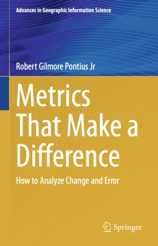

Cities and regions as complex adaptive systems.
The Spatial Intelligence Collective studies how cities grow, how regions diverge, and how habitats shift. Founded at Toronto Metropolitan University and shared with colleagues across Canada and beyond, it works with geocomputation, GeoAI, spatial statistics and econometrics, and a growing line in quantum approaches to spatial optimization.
- 20 fellows
- 17 universities
- 8 countries
Research
Five lines of work, one question: how would a place respond if the rules changed?
- GeocomputationCellular automata, Markov chains, and agent-based models for simulating urban and land-use change at regional scale.
- Spatial analysisSpatial statistics, GIScience, and spatial econometrics, from autocorrelation to gravity models and landscape metrics.
- GeoAI and machine learningMachine learning, self-organizing maps, and spatial regressions for prediction, pattern recognition, and decision support.
- Complexity scienceEmergence, networks, spatial equilibria, and adaptive behaviour in regional and urban systems.
- Quantum computing EmergingQuantum machine learning and quantum-enhanced spatial econometrics for optimization and environmental modelling.
Written together
Recent work by two or more fellows.
- 2026Built Environment and Spatiotemporal Traffic Congestion Patterns: A Systematic Review
- 2026Census-validated agent-based modeling of immigrant settlement and diversity in Metro Vancouver
- 2026Geosimulation of urban densification and its association with surface urban heat island effects
- 2026Improving Machine Learning Models of Land Cover Change Using Spatial Sample Weights Based on Patch‐Level Landscape Metrics
All 68 works by two or more fellows · 2,686 publications by members
People
A shared home for spatial thinking across universities.
- 20 fellows
- 17 universities
- 8 countries
- 9 disciplines
Members range from assistant to emeritus professors in geography, planning, geomatics engineering, remote sensing, information management, computing science, business, economics, and nursing, at universities in Canada, Portugal, the United States, Brazil, Denmark, Germany, Hong Kong, and the United Kingdom. That breadth lets the Collective build and fund research across disciplines and across borders.
Lead
- Eric VazPrincipal Investigator · Full Professor, Department of Geography and Environmental Studies, Toronto Metropolitan University
Fellows 20
- Godwin ArkuWestern University
- Michael BattyUniversity College London
- Fábio BreunigUniversidade Federal do Paraná
- Luís Serra CoelhoUniversidade do Algarve
- Suzana DragicevicSimon Fraser University
- Victoria FastUniversity of Calgary
- Suzanne FredericksToronto Metropolitan University
- Murtaza HaiderUniversity of Alberta
- Jamal Jokar ArsanjaniAalborg University
- Jinhyung LeeWestern University
- Songnian LiToronto Metropolitan University
- Xintao LiuThe Hong Kong Polytechnic University
- Raktim MitraToronto Metropolitan University
- Marco PainhoNOVA Information Management School, Universidade Nova de Lisboa
- Liliana PerezUniversité de Montréal
- Robert Gilmore Pontius JrClark University
- Greg RybarczykUniversity of Michigan-Flint
- Alysha van DuynhovenWilfrid Laurier University
- Michael WidenerUniversity of Toronto
- Alexander ZipfHeidelberg University
Doctoral researchers 2
- Teagan SoniToronto Metropolitan University
- Anastasiia SmirnovaToronto Metropolitan University
The Collective's magazine

Space, place, and imagination.

About the magazine
STRANGE explores space, place, and imagination through essays, images, letters, and conversations. It welcomes short reflections as well as longer contributions, and it gives the stranger problems of spatial analysis a place to be thought through in public.
Books
Everything flows.
Recent books by members of the Collective. Each takes up a question we keep returning to: how cities and regions change, and how we can model and measure that change.
-

Forthcoming
Cognitive Cities and Regions
Eric Vaz · Springer, 2027
Cities and regions as adaptive systems that learn, with people at the centre of urban governance.
-

Book
The Computable City
Michael Batty · The MIT Press, 2024
How computers have changed the way we model and plan cities, and where that may lead next.
-

Book
Metrics That Make a Difference
Robert Gilmore Pontius Jr · Springer, 2022
Clear metrics for comparing maps and for judging how well models of land change perform.
Fellows can add a recent book of their own by writing to Eric.
News
- 2026Work begins on STRANGE, the Collective's magazine of space, place, and imagination.
- 2026Eric Vaz publishes Regional and Urban Change and GIScience: An Analysis of Northern Canada with Springer.
- 2025Eric Vaz appointed to the Editorial Board of Humanities and Social Sciences Communications (Springer Nature).
Data
- 2026NAEUP: North American Ethnic-Group Urban Panel
- 2026Place, Affect, and Creative Labour in Mozart's Correspondence
- 2026Agentic GeoAI bibliometric corpora
- 2020Historic Ontario road, rail, municipality, county, and district shapefiles
The Collective's geospatial data platform lives at geo-data.io.
Contact
Jorgenson Hall, JOR-620
Department of Geography and Environmental Studies
380 Victoria Street, Toronto, ON M5B 2K3